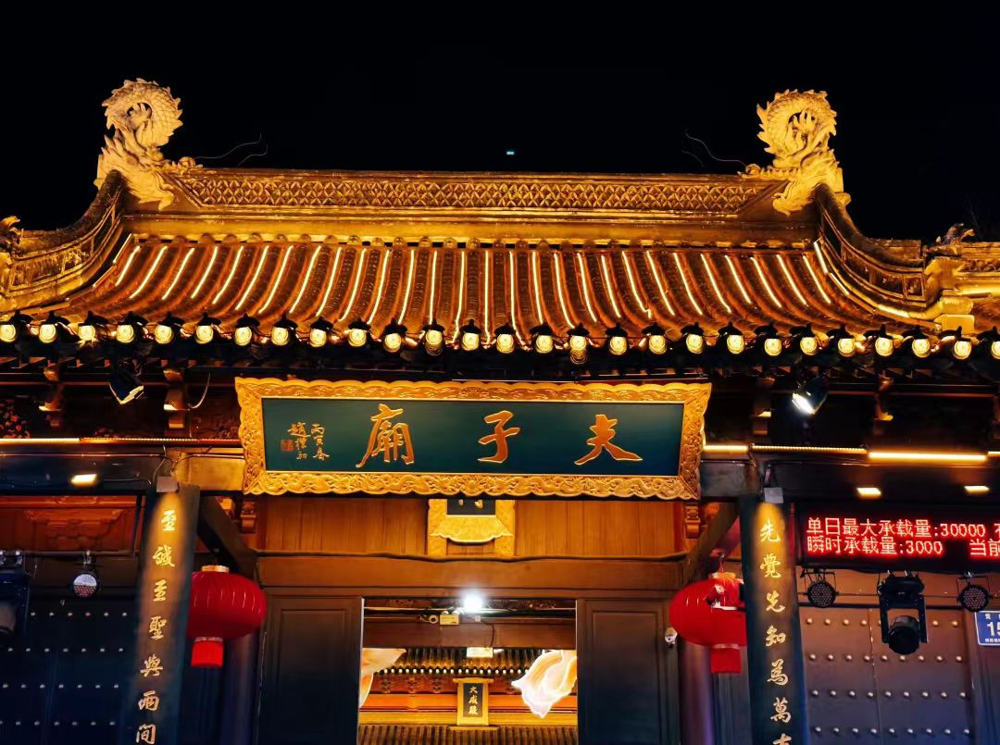

传奇：南京夫子庙是中国四大文庙之一，位于秦淮河北岸的贡院街旁，是供奉和祭祀孔子的庙宇，也是中国古代文化枢纽之地。始建于东晋咸康三年（337年），原为学宫，北宋景祐元年（1034年）改建为孔庙。夫子庙与江南贡院、秦淮河共同构成了"庙市街景"合一的独特格局，素有"六朝金粉地，十里秦淮河"之美誉。
核心看点：
游览攻略：
交通信息：位于南京市秦淮区贡院街，地铁1号线三山街站、3号线夫子庙站直达。周边有瞻园、老门东、中华门城堡等景点。建议与中山陵、总统府、南京博物院组成经典旅游线路。
起源与发展：东晋咸康三年（337年），丞相王导提议"治国以培育人才为重"，在秦淮河北岸建学宫，是为夫子庙前身。北宋景祐元年（1034年），文宣王庙（孔庙）迁至今址，称建康府学。南宋建炎年间毁于战火，绍兴九年（1139年）重建，形成左庙右学格局。明初为国子监，清代为江宁府学，一直是江南文化教育中心。
江南贡院：南宋乾道四年（1168年）建建康贡院，明初迁至夫子庙旁，清同治年间扩建至20644间号舍，成为全国最大科举考场。明清时期，江南贡院共产生状元58名，占全国状元总数一半以上。唐伯虎、郑板桥、吴敬梓、翁同龢、张謇等皆出于此。光绪三十一年（1905年）科举废除，贡院结束历史使命。
明清鼎盛：明清两代，夫子庙地区达到鼎盛。秦淮河两岸酒楼茶馆、青楼画舫林立，成为江南文化和娱乐中心。"秦淮八艳"（柳如是、李香君、董小宛等）的故事流传至今。每逢乡试，数万考生云集，带动了书肆、文房、客栈、餐饮业的繁荣，形成独特的科举经济。
近代变迁：太平天国时期，夫子庙遭严重破坏。清同治年间重建。1937年日军占领南京，夫子庙再遭破坏，大成殿被焚。1984年起，南京市人民政府按明清形制复建夫子庙，恢复古建筑群。1985年建成夫子庙美食街，1986年恢复秦淮灯会，1991年大成殿重建开放。
历史人物：①王导（276-339）：东晋丞相，提议建学宫。②王安石（1021-1086）：曾任江宁知府，重视教育。③朱元璋（1328-1398）：明太祖，定都南京，重视科举。④李香君（1624-1654）："秦淮八艳"之一，故居在夫子庙。⑤吴敬梓（1701-1754）：著《儒林外史》，讽刺科举制度，曾居住秦淮河畔。
文化传承：1984年，夫子庙秦淮风光带开始大规模修复。1991年，夫子庙古建筑群基本恢复明清风貌。2006年，江南贡院遗址建南京中国科举博物馆。2010年，夫子庙秦淮风光带被评为国家5A级旅游景区。夫子庙成为展示南京历史文化、民俗风情的重要窗口。
总体布局：夫子庙建筑群采用"前庙后学、左庙右市"的独特格局。中轴线自南向北依次为：照壁→泮池→天下文枢坊→棂星门→大成门→甬道→大成殿→明德堂→尊经阁→卫山。东侧为江南贡院，西侧为市井商业区。这种布局体现了儒家"庙学合一"的思想，也适应了科举经济的需要。
建筑特色：夫子庙建筑为明清江南官式建筑风格，主要特点：①色彩：青瓦红柱，白墙灰砖，色彩素雅；②屋顶：重檐歇山顶为主，大成殿为黄色琉璃瓦，体现孔庙规格；③装饰：木雕、砖雕、石雕精美，题材多为儒家典故、吉祥图案；④布局：中轴对称，主次分明，层次丰富。
大成殿建筑群：大成殿是夫子庙核心建筑，面阔七间（26.1米），进深五间（13.85米），高18米。殿前有月台，汉白玉栏杆，中间为云龙御路。殿内藻井彩绘鹤鹿同春、蟠桃灵芝等图案。孔子像高4.18米，重2.5吨，为国内最大孔子青铜像。四配（颜回、曾参、孔伋、孟轲）及十二哲像分列两侧。
江南贡院建筑：贡院建筑体现科举考场特色：①明远楼：三层木结构，高13米，是贡院最高建筑，用于监考巡察；②号舍：砖木结构，高2米，深1.3米，宽1米，仅容一人考试；③至公堂：主考官办公处；④衡鉴堂：阅卷处。现存明远楼、飞虹桥及部分号舍遗址。
秦淮河景观带：夫子庙与秦淮河融为一体，形成独特的水乡景观：①画舫：仿明清风格，有龙凤舫、秦淮舫等，夜晚亮灯游览；②桥梁：文德桥、文源桥、平江桥等，各具特色；③河房：临水而建的明清建筑，前门临街，后窗临河；④码头：东西码头，供画舫停靠。
街巷格局：夫子庙地区保留明清街巷格局：①贡院街：主商业街，店铺林立；②乌衣巷：狭窄古巷，青石板路，两侧为仿古建筑；③琵琶巷：因形似琵琶得名；④金陵路：美食街，汇集南京老字号。街巷宽度2-4米，两侧建筑多为两层，白墙灰瓦，马头墙。
科举文化：夫子庙是科举文化的活化石。每年农历八月乡试期间，江南贡院举行盛大的"科举模拟考试"活动，游客可体验搜身、进号舍、答题、交卷全过程。南京中国科举博物馆通过文物、场景复原、多媒体技术，展示1300年科举制度史。科举文化节期间，举办状元巡游、金榜题名仪式等活动。
秦淮灯会：国家级非物质文化遗产，始于六朝，盛于明清。每年农历正月初一至十八举办，是中国规模最大的民俗灯会。灯会主题每年不同，有"秦淮情怀""金陵春韵""盛世华章"等。灯组题材包括历史故事、神话传说、生肖动物、现代科技等。正月十五元宵节达到高潮，有"秦淮灯彩甲天下"之美誉。
传统节庆：①祭孔大典：每年9月28日孔子诞辰，举行释奠礼，表演八佾舞；②端午龙舟：秦淮河上赛龙舟，纪念屈原；③中秋拜月：文德桥赏月，体验"文德分月"；④重阳登高：登明远楼，望远祈福；⑤腊八施粥：寺庙施腊八粥，祈福平安。这些节庆活动传承了南京地方民俗。
秦淮美食：夫子庙是南京小吃发源地，金陵风味集中地：①秦淮八绝：永和园的黄桥烧饼和开洋干丝，蒋有记的牛肉汤和牛肉锅贴，六凤居的豆腐涝和葱油饼，奇芳阁的鸭油酥烧饼和什锦菜包，莲湖糕团店的桂花夹心小元宵和五色小糕，瞻园面馆的熏鱼银丝面和薄皮包饺，魁光阁的五香豆和五香蛋；②南京盐水鸭：皮白肉嫩，肥而不腻；③鸭血粉丝汤：南京特色小吃；④状元豆：寓意"连中三元"。
民间艺术：夫子庙是南京民间艺术的展示窗口：①南京云锦：世界非物质文化遗产，古代皇家御用锦缎；②金陵剪纸：线条流畅，造型生动；③秦淮彩灯：传统手工扎制，造型多样；④南京白话：地方曲艺，幽默诙谐；⑤古琴艺术：金陵琴派，清微淡远。夫子庙民间艺术大观园集中展示这些非遗项目。
市井生活：夫子庙保留着老南京的市井生活气息：①茶馆听书：奇芳阁、魁光阁等老茶馆，可听南京评话、白局；②古玩市场：东市、西市经营古玩、字画、文房四宝；③花鸟鱼虫：夫子庙花鸟市场是南京最大的花鸟市场；④传统手艺：现场制作糖画、面人、剪纸等。这些市井生活场景，让游客感受老南京的生活节奏。
历史文化价值：夫子庙秦淮风光带是南京历史文化的重要载体，集中体现了六朝文化、明清文化、科举文化、民俗文化。它是中国唯一一个将祭祀建筑（孔庙）、教育机构（学宫）、科举考场（贡院）、商业街区、自然景观（秦淮河）完美融合的历史文化街区，见证了南京1700多年的城市发展史。
建筑艺术价值：夫子庙建筑群是明清江南官式建筑的典范，大成殿、明远楼、魁光阁等建筑体现了古代工匠的高超技艺。建筑群布局严谨，中轴对称，主次分明，是中国古代礼制建筑的杰出代表。秦淮河畔的河房、画舫、桥梁，形成了独特的水乡建筑景观，是研究江南水乡建筑的重要实例。
教育文化价值：作为中国古代最大的科举考场，夫子庙江南贡院是中国1300年科举制度的实物见证。南京中国科举博物馆系统展示了科举制度的产生、发展、消亡过程，是研究中国教育史、人才选拔制度的重要基地。夫子庙每年举办的祭孔大典、科举文化节等活动，传承了尊师重教的传统。
民俗文化价值：夫子庙是南京民俗文化的活态博物馆。秦淮灯会、端午龙舟、中秋拜月等传统节庆活动，传承了地方民俗。南京云锦、金陵剪纸、秦淮彩灯等非物质文化遗产在此展示、传承。夫子庙小吃集中了南京传统美食，是南京饮食文化的重要代表。这些民俗文化活动，丰富了市民文化生活，增强了文化认同感。
旅游经济价值：夫子庙秦淮风光带是国家5A级旅游景区，年接待游客超3000万人次，是南京旅游的金字招牌。旅游带动了商业、餐饮、住宿、交通等相关产业发展，创造了大量就业岗位。夫子庙商圈是南京重要的商业中心，老字号店铺、特色商品、文创产品琳琅满目，形成了完整的旅游产业链。
保护与传承：1984年，南京市制定《夫子庙秦淮风光带保护规划》，按照"修旧如旧"原则修复古建筑。2002年，夫子庙古建筑群被列为全国重点文物保护单位。建立夫子庙秦淮风光带管理委员会，统一管理保护。开展非遗传承人培养，举办秦淮灯会、科举文化节等品牌活动。利用现代科技，建设智慧景区，提升游客体验。夫子庙的保护模式，为历史文化街区的保护利用提供了成功经验。